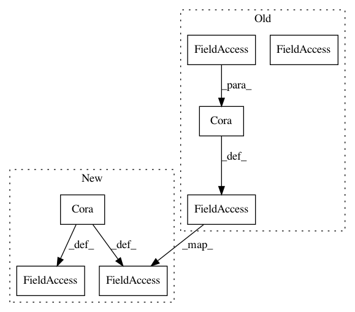

666e0c29d52dc88b465754b72098bbe8e38c4d63,examples/cora_gat.py,,,#,8
Before Change
path = os.path.dirname(os.path.realpath(__file__))
path = os.path.join(path, "..", "data", "Cora")
data = Cora(path, normalize=True)[0].cuda().to_variable()
train_mask = torch.arange(0, 140).long()
val_mask = torch.arange(140, 640).long()
test_mask = torch.arange(data.num_nodes - 1000, data.num_nodes).long()
After Change
from torch_geometric.nn.modules import GraphAttention // noqa
path = osp.join(osp.dirname(osp.realpath(__file__)), "..", "data")
dataset = Cora(osp.join(path, "Cora"), normalize=True)
// dataset = CiteSeer(osp.join(path, "CiteSeer"), normalize=True)
data = dataset[0].cuda().to_variable()
train_mask = torch.arange(0, 140).long() // Cora = 140, CiteSeer = 120
val_mask = torch.arange(train_mask.size(0), train_mask.size(0) + 500).long()
test_mask = torch.arange(data.num_nodes - 1000, data.num_nodes).long()
In pattern: SUPERPATTERN
Frequency: 3
Non-data size: 7
Instances
Project Name: rusty1s/pytorch_geometric
Commit Name: 666e0c29d52dc88b465754b72098bbe8e38c4d63
Time: 2018-03-08
Author: matthias.fey@tu-dortmund.de
File Name: examples/cora_gat.py
Class Name:
Method Name:
Project Name: rusty1s/pytorch_geometric
Commit Name: 430beec651fe14e4f0f032cbc27e18a9ca415d90
Time: 2018-03-06
Author: matthias.fey@tu-dortmund.de
File Name: examples/cora.py
Class Name:
Method Name:
Project Name: rusty1s/pytorch_geometric
Commit Name: 666e0c29d52dc88b465754b72098bbe8e38c4d63
Time: 2018-03-08
Author: matthias.fey@tu-dortmund.de
File Name: examples/cora_gcn.py
Class Name:
Method Name: